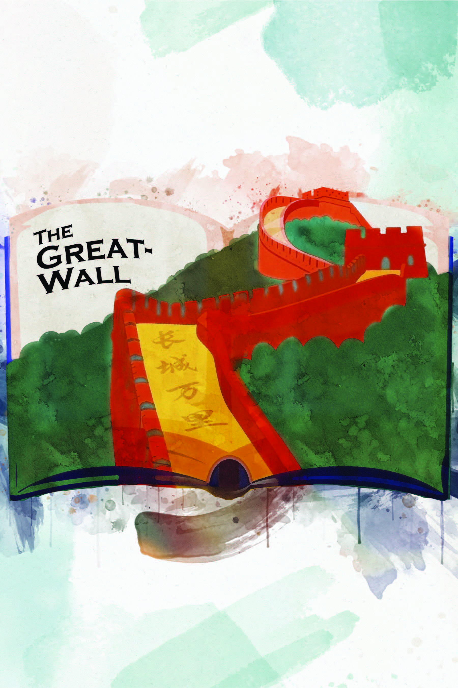

Digital
Future
Future
交互设计
× 创意技术
× 游戏设计
× 创意技术
× 游戏设计
你好呀！我是一名多学科艺术媒体设计师。具备数字交互创作背景，我擅长将极具表现力的视觉叙事与严谨的用户体验、系统策划相结合。我平时主要在 Unity、Unreal Engine 和 Houdini 中探索系统生成与交互原型。从机制逻辑的白盒搭建，到程序化视觉艺术，我致力于通过前沿技术手段解决复杂的设计挑战，打造沉浸式的数字未来体验。
INTERACTION DESIGN USER EXPERIENCE RAPID PROTOTYPING DIGITAL FUTURES SPATIAL COMPUTING VISUAL ARTS
INTERACTION DESIGN USER EXPERIENCE RAPID PROTOTYPING DIGITAL FUTURES SPATIAL COMPUTING VISUAL ARTS
作品案例
Selected Works平面与视觉设计
海报画廊与视觉传达展示



核心能力 Core Capabilities
交互与体验设计
用户体验旅程 (UX)、规则系统搭建、操作心流控制
高保真快速原型
精通运用引擎(Unity/UE)及AI Coding快速验证交互设想
数字生成与视觉艺术
算法生成 (PCG)、3D环境叙事与排版布局
开发工具 Toolset
交互引擎：
Unity, Unreal Engine 5, TouchDesigner
逻辑开发：
C#, C++, Python, JavaScript
设计媒介：
Adobe CC (Ai, Ps, Pr, Ae), Figma, Houdini，WebGL
教育背景 Education
安大略艺术设计大学 (OCAD U)
2023.09 - 2026.06数字未来 (Digital Futures), 设计学士
GPA: 3.3/4 | 专业排名前 20%
乔治布朗学院 (George Brown)
2023.05 毕业平面与数字设计 高级文凭
荣誉与认证 Recognition
Level Up Showcase 2026 | 三等奖
安省顶级数字媒体竞赛。参与交互原型《Dust Bunny》设计开发并获奖。
Epic Games Design Certificate
系统覆盖引擎底层逻辑、实时交互设计与 UX/UI 体验规范。